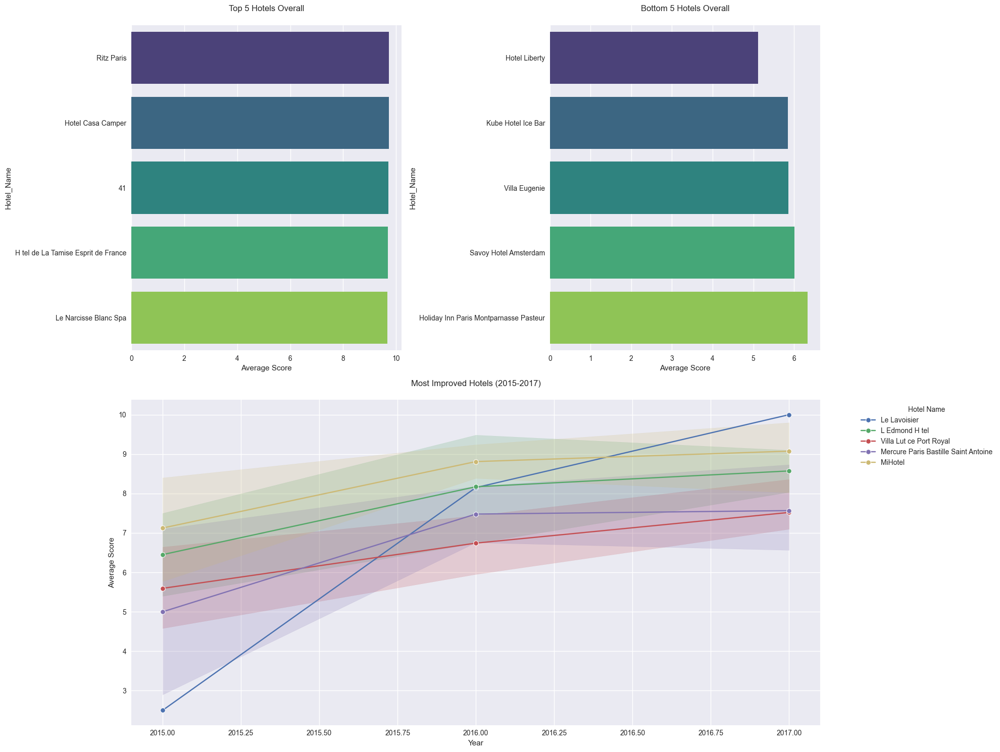

Extracted actionable features from Booking.com reviews, enabling smarter decision-making for both travelers and hoteliers through scalable text analytics.
Developed a feature extraction pipeline using NLTK and Cursor AI to analyze Booking.com hotel reviews. Transformed unstructured text into structured insights like sentiment scores and key themes (e.g., location, cleanliness), enabling enhanced customer satisfaction analysis and data-driven decision-making for hoteliers.


Project Overview
This project focuses on advanced text analytics and natural language processing techniques to analyze hotel customer reviews, with a particular emphasis on understanding and processing negative feedback to derive actionable insights.
Key Technical Components
1. Data Processing & Text Cleaning
Implemented sophisticated text preprocessing techniques to clean and standardize customer review data
Developed a custom processing pipeline to remove common negative words, allowing for more nuanced analysis of customer complaints
Created a parallel display system to compare original reviews with processed text, enabling clear visualization of the text transformation process
2. Sentiment Analysis
Focused on negative comment analysis to identify specific areas of customer dissatisfaction
Built a structured DataFrame using pandas to organize and analyze customer feedback
Implemented side-by-side comparison functionality to track how text processing affects the original content
3. Technical Skills Demonstrated
Python Programming
Pandas DataFrame manipulation
Natural Language Processing (NLP)
Text preprocessing and cleaning
Data visualization and presentation
This analysis provides valuable insights for hotel management by:
Identifying common themes in negative feedback
Enabling data-driven decision making for hotel improvements
Creating a structured approach to understanding customer dissatisfaction
Providing clear visualization of complaint patterns
Data Preprocessing Techniques
Text Cleaning Pipeline
- Tokenization: Breaking down reviews into individual words/tokens for granular analysis
- Stop Word Removal: Custom implementation to remove common negative words while preserving context-specific important terms
- Normalization: Standardizing text to ensure consistent analysis
- Case normalization (likely converting all text to lowercase)
- Whitespace standardization
- Special character handling
Data Structuring
- Pandas DataFrame Implementation - Created structured data frames for both original and processed text
- Implemented parallel comparison functionality using pandas DataFrame operations
- Utilized efficient data manipulation techniques for large-scale text processing
Natural Language Processing (NLP) Techniques
Text Processing
- Custom Negative Word Filtering - Developed specialized word removal system for common negative terms
- Preserved context-specific negative feedback while removing generic negative language
- Enhanced signal-to-noise ratio in the analysis
Sentiment Analysis
- Negative Comment Processing: Focused analysis on negative feedback patterns
- Implemented comparison framework between original and processed text
- Developed systematic approach to identify key complaint themes
4. Data Visualization
Dashboard with the following plots; (1) "Top Five Hotels Overall" with consistently high ratings, (2) Bottom Five Hotels Overall" with consistently low ratings, (3) Five Most Improved Hotels" with the highest improvement in average ratings from 2015 to 2017, showing their average ratings for each of the three years.
Top five features that customers prefer most if they are a solo traveler vs traveling with a group vs on a business trip vs a leisure trip vs traveling as a couple vs a family with young children.
Top 5 features mentioned in positive vs negative reviews
This site was created with the Nicepage